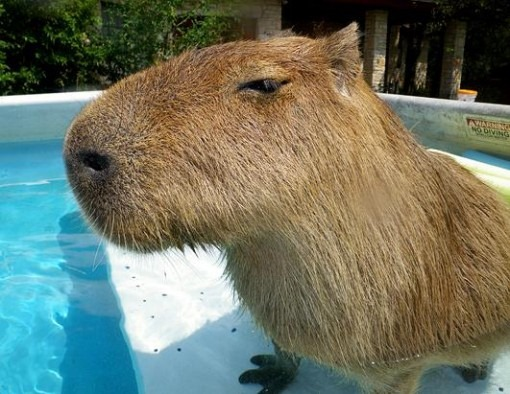
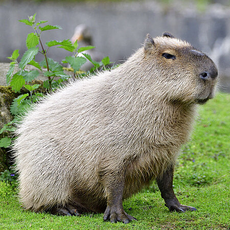
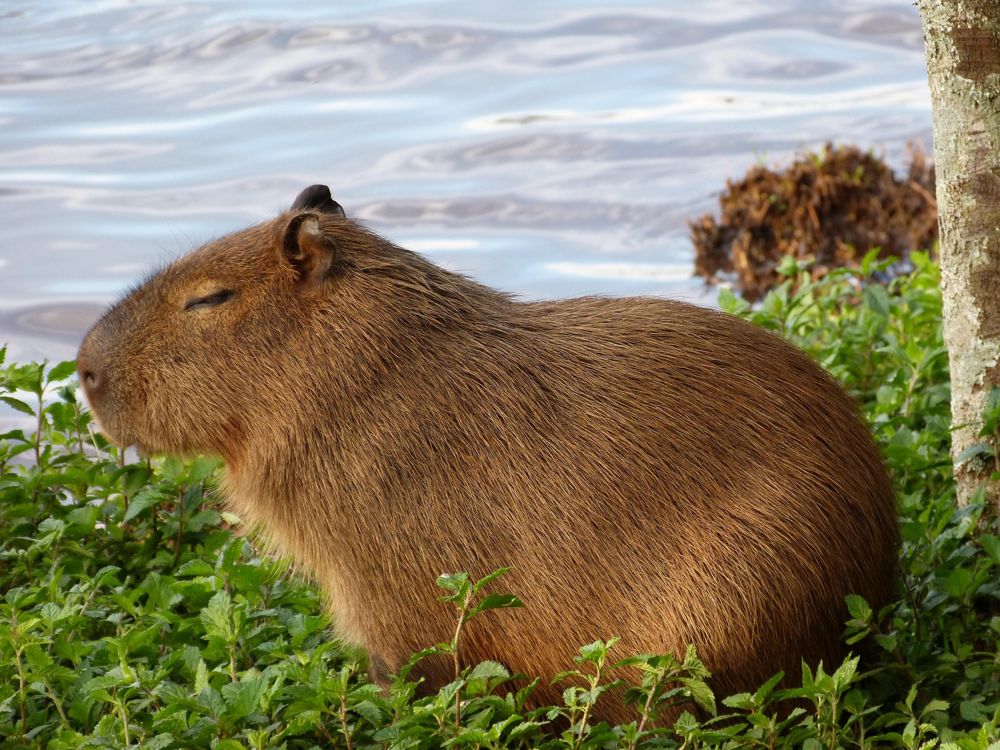
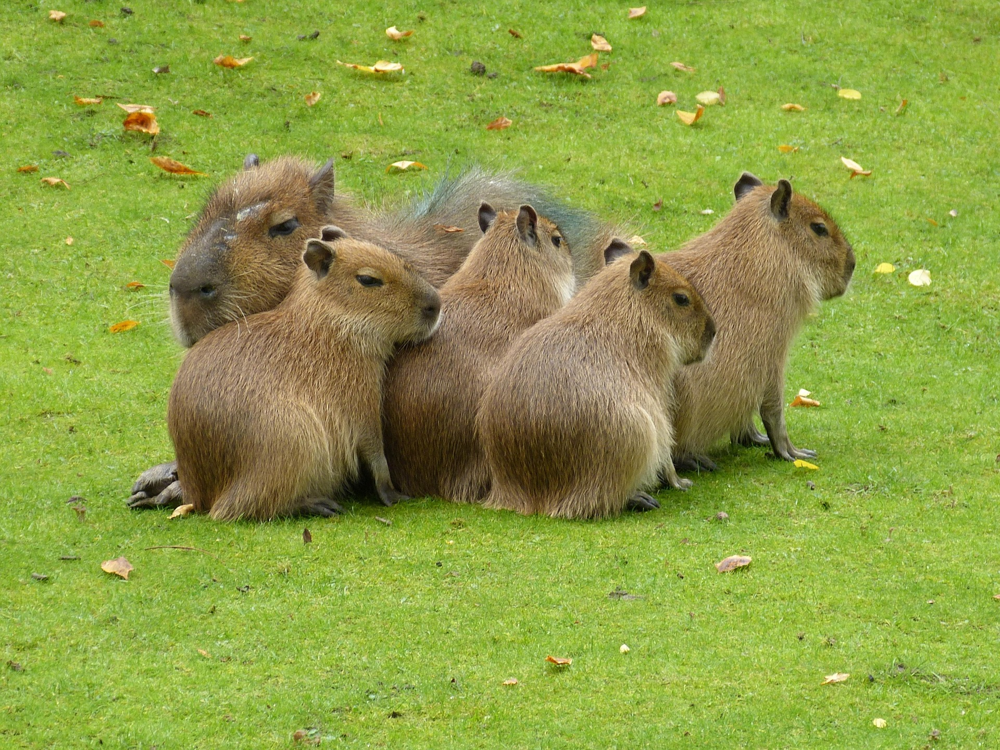
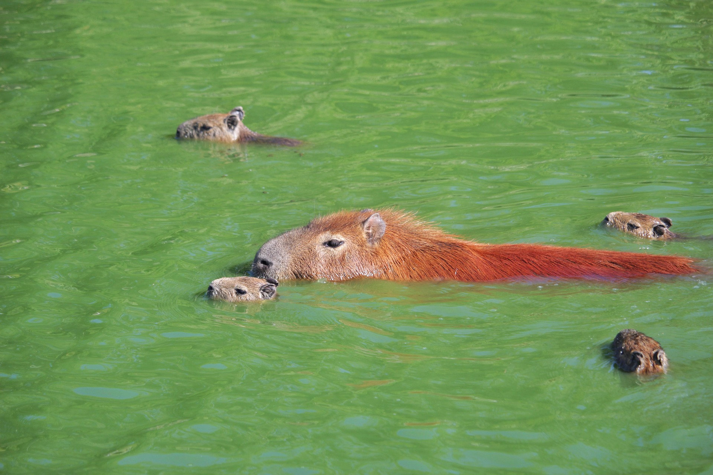
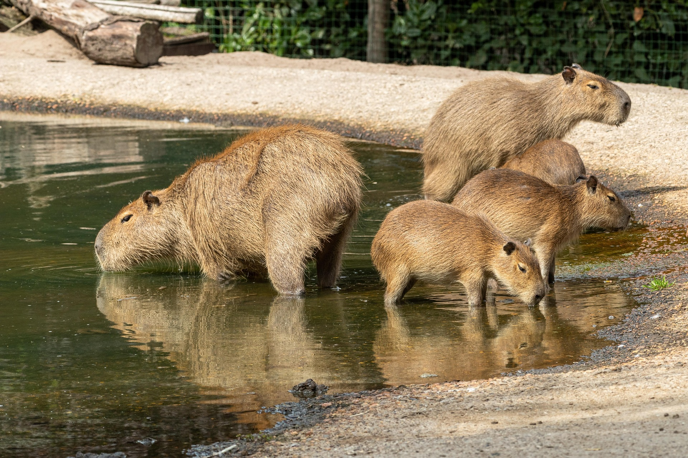
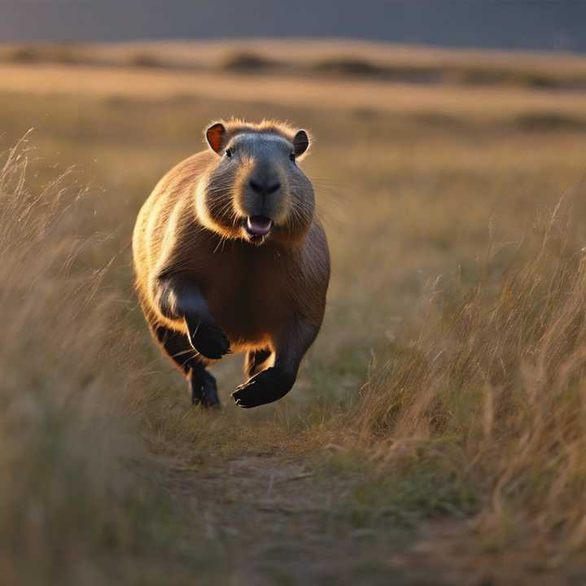

chevron_right
chevron_left
Capybaras, The Worlds Chillest Animal


What are capybaras?
Capybaras are semi-aquatic animals that are primarily found in South America. They live in forest and wetlands. They are herbivores, with their diet consisting of mainly grasses and fruits. They are the worlds largest rodents, being able to grow up to 1.3 metres(4.3 feet) long and weigh up to 79kg(174 pounds)!
Some REALLY cool capybara fun facts.
Click cards to see more info.

Capybaras are REALLY cute. In my opinion, they are one of the cutest animals there are!
Cute

Capybaras are one of, if not the most loveable animals on Earth! I mean, how can you disagree with that?
Lovable

Capybaras are semi-aquatic animals that spend hours a day submerged under water to regulate their body temperature and prevent overheating. With this comes rapid swimming speeds, where they can swim as fast as 8km/h!
Swimmers
Capybaras are really smart creatures. They have shown incredible problem solving skills, such as navigating obstacles to find food!
Intelligent

Capybaras are highly social animals, and are really socially intelligent! They communicate with one another through a variety of sounds, whistles, grunts and purrs!
Social

Despite how fat capybaras appear to be, they can run at great speeds, sometimes reaching up to 35 km/h! This is slightly faster than an average human! They use this speed to quickly outrun predators and danger.
Runners
This is cappy(he's meant to be a capybara)
Shoud you adopt a capybara?
Yes! If you have the resources to properly care for one, I reckon they are the best, most cutest and most amazing animals to have. I dont even know if you can adopt them or not lol.